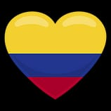
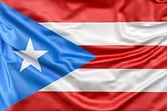
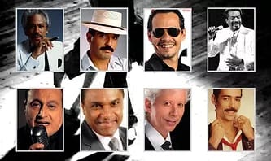
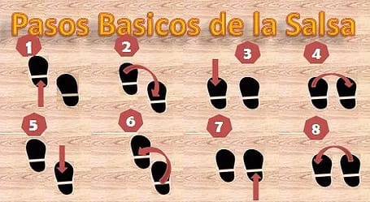

Salsa es la palabra musical usada desde finales de los años 60, resultado de la síntesis del son cubano y otros géneros de la música caribeña, como el jazz y otros ritmos estadounidenses, la salsa contiene variedades: puertorriqueña, dominicana, colombiana, venezolana y de otros países de América Latina. La salsa fue desarrollada por músicos cubanos, Puertorriqueños, en el Gran Caribe y la ciudad de New York.
El origen de la salsa se remonta al siglo XVI en Cuba, allí la música hispana traída por los conquistadores españoles y la música traída por los esclavos africanos se mezclaron dando origen a una gran variedad de ritmos musicales. Entre estos ritmos afrocubanos se destacan: el son cubano, el chachachá, el mambo, el son montuno, la guaracha, el guaguancó, y la charanga; pero es el Son Cubano el que constituye la base musical de lo que hoy en día se conoce como salsa.
Después de la segunda guerra mundial, hubo una gran emigración de latinoamericanos de diferentes países en busca de una mejor forma de vida, los cuales se radicaron en New York en un área marginal del Alto Manhattan neoyorquino conocido como “el barrio”. Fue en este ambiente en el que a finales de 1960 la identidad de una nueva generación latina empezó a cristalizar y a encontrar su voz cultural a través de la corriente musical que hoy conocemos como salsa.
En el año 1967, el empresario italoamericano Jerry Masucci y el flautista dominicano Johnny Pacheco, junto con el sello creado como Fania Records, dieron origen a “Fania All Stars”. La idea de Pacheco fue reunir a todas las estrellas en Fania, proyecto salsero considerado como el más grande y exitoso en la historia de la salsa. Pacheco logró lo que tanto deseaba, reunió las voces de los más grandes representantes de la música latina del momento, entre ellos: Johnny Pacheco, Cheo Feliciano
, Héctor Lavoe, Willie Colón, Ricardo Ray, Bobby Cruz, Bobby Valentín, Ray Barreto, Mongo Santamaría, Justo Betancourt, Ismael Miranda, Rubén Blades, Pete Rodríguez, Roberto Roena, Nicky Marrero, Larry Harlow, Richie Ray, Héctor Zarzuela, Yomo Toro y artistas invitados como: Tito Puente, Celia Cruz, y Eddie Palmieri.
ESTILOS
Salsa cubana
Salsa venezolana
Salsa en línea o al estilo de Los Ángeles
Salsa en rueda cubana
Salsa estilo Nueva York
Salsa estilo Caleña
Salsa puertorriqueña
IMAGENES
|  |  | |
|  |  |
VIDEOS DE APOYO
VIDEO FINAL
Esta es una pagina HTML para sistemas